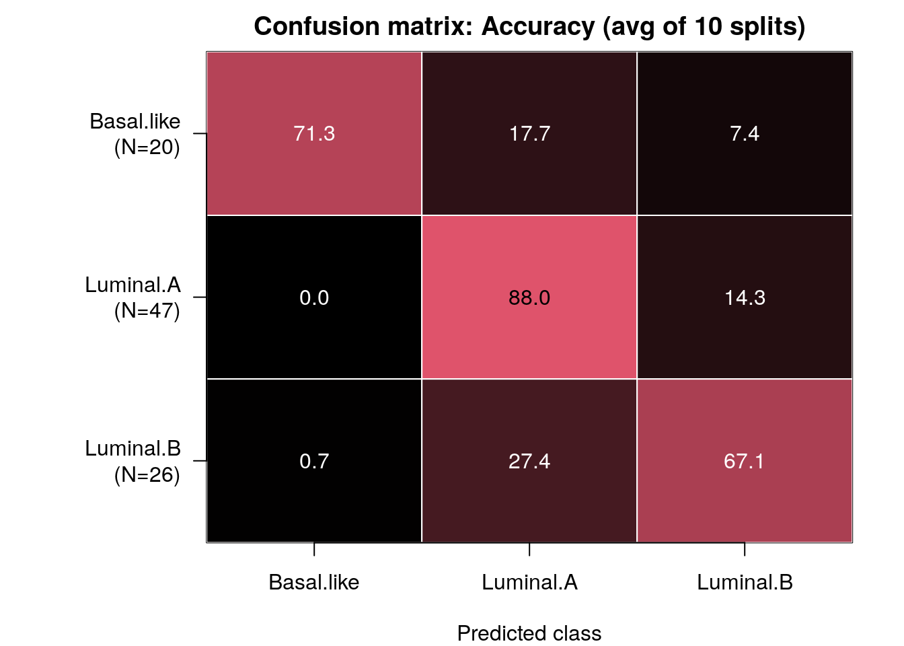
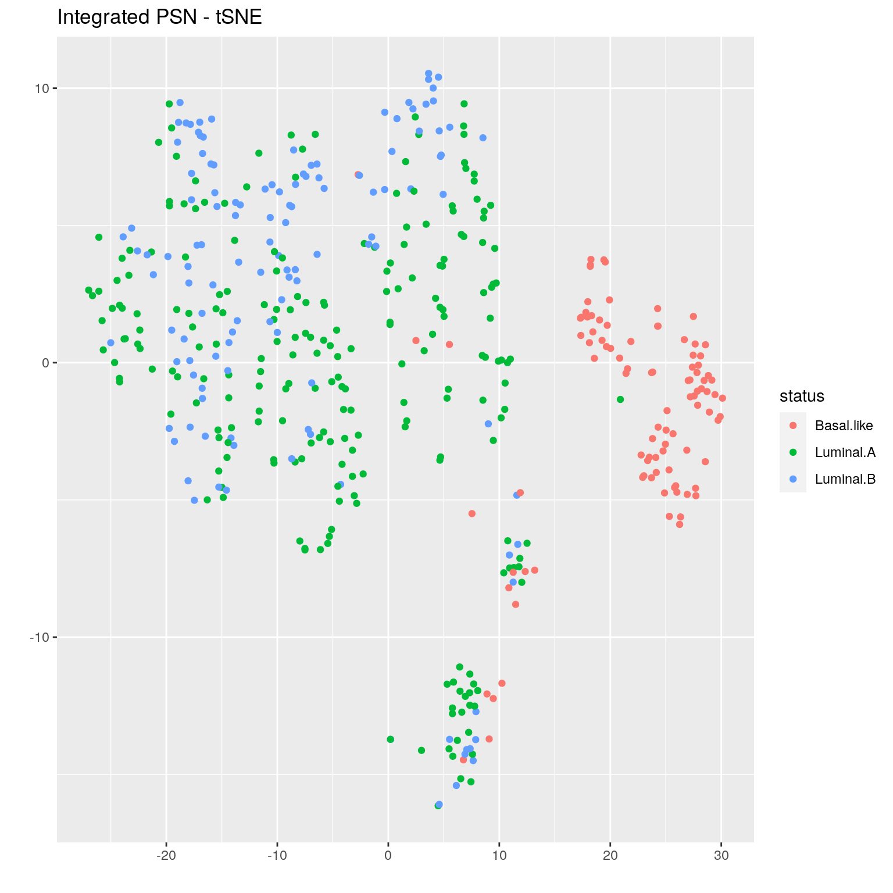

Module 11 Lab 1: Three-way classifier from four genomic layers
This work is licensed under a Creative Commons Attribution-ShareAlike 3.0 Unported License. This means that you are able to copy, share and modify the work, as long as the result is distributed under the same license.
Introduction
In this lab we will build a predictor to classify three different types of breast tumours, two of a luminal subtype (Luminal A and Luminal B), and one of a basal subtype.
For this we will use data from the The Cancer Genome Atlas, and will integrate four types of -omic data:
- gene expression from Agilent mRNA microarrays
- DNA methylation (Illumina HumanMethylation 27K microarrays))
- proteomic measures from reverse-phase protein arrays, and
- miRNA sequencing

Figure 2: Lab 1 design: We will integrate four layers of genomic data. Each layer will be converted into a single patient similarity network using Pearson correlation for pairwise similarity.
Get and prepare data
In this example, we use curated multi-modal data from The Cancer Genome Atlas, gotten from the BioConductor curatedTCGAData package. Data for all cancer types profiled in TCGA are available through this package; see this tutorial for details.
suppressMessages(library(curatedTCGAData))Let’s take a look at the available data for breast cancer, without downloading any (set dry.run=TRUE).
Note that the new release of BioConductor (3.13) actually allows users to fetch one of two versions of TCGA data.
curatedTCGAData(diseaseCode="BRCA", assays="*",dry.run=TRUE)## snapshotDate(): 2020-10-27## See '?curatedTCGAData' for 'diseaseCode' and 'assays' inputs## ah_id title file_size rdataclass rdatadateadded rdatadateremoved
## 1 EH584 BRCA_CNASeq-20160128 0 Mb RaggedExperiment 2017-10-10 <NA>
## 2 EH585 BRCA_CNASNP-20160128 9.8 Mb RaggedExperiment 2017-10-10 <NA>
## 3 EH586 BRCA_CNVSNP-20160128 2.8 Mb RaggedExperiment 2017-10-10 <NA>
## 4 EH588 BRCA_GISTIC_AllByGene-20160128 1.3 Mb SummarizedExperiment 2017-10-10 <NA>
## 5 EH2121 BRCA_GISTIC_Peaks-20160128 0 Mb RangedSummarizedExperiment 2019-01-09 <NA>
## 6 EH589 BRCA_GISTIC_ThresholdedByGene-20160128 0.4 Mb SummarizedExperiment 2017-10-10 <NA>
## 7 EH2122 BRCA_Methylation_methyl27-20160128_assays 63.2 Mb SummarizedExperiment 2019-01-09 <NA>
## 8 EH2123 BRCA_Methylation_methyl27-20160128_se 0.4 Mb SummarizedExperiment 2019-01-09 <NA>
## 9 EH2124 BRCA_Methylation_methyl450-20160128_assays 2613.2 Mb RaggedExperiment 2019-01-09 <NA>
## 10 EH2125 BRCA_Methylation_methyl450-20160128_se 6.1 Mb SummarizedExperiment 2019-01-09 <NA>
## 11 EH593 BRCA_miRNASeqGene-20160128 0.6 Mb SummarizedExperiment 2017-10-10 <NA>
## 12 EH594 BRCA_mRNAArray-20160128 27.3 Mb SummarizedExperiment 2017-10-10 <NA>
## 13 EH595 BRCA_Mutation-20160128 4.5 Mb RaggedExperiment 2017-10-10 <NA>
## 14 EH596 BRCA_RNASeq2GeneNorm-20160128 64.5 Mb SummarizedExperiment 2017-10-10 <NA>
## 15 EH597 BRCA_RNASeqGene-20160128 30 Mb SummarizedExperiment 2017-10-10 <NA>
## 16 EH598 BRCA_RPPAArray-20160128 1.6 Mb SummarizedExperiment 2017-10-10 <NA>Now let’s actually download the data, getting just the four layers we need:
brca <- suppressMessages(curatedTCGAData("BRCA",
c("mRNAArray","Methylation_methyl27",
"RPPAArray","miRNASeqGene"),
dry.run=FALSE))This call returns a MultiAssayExperiment object. Recall that this is a container for storing multiple assays performed on the same set of samples. See this tutorial to learn more.
Let’s briefly explore the brca MultiAssayExperiment object.
brca## A MultiAssayExperiment object of 4 listed
## experiments with user-defined names and respective classes.
## Containing an ExperimentList class object of length 4:
## [1] BRCA_miRNASeqGene-20160128: SummarizedExperiment with 1046 rows and 849 columns
## [2] BRCA_mRNAArray-20160128: SummarizedExperiment with 17814 rows and 590 columns
## [3] BRCA_RPPAArray-20160128: SummarizedExperiment with 226 rows and 937 columns
## [4] BRCA_Methylation_methyl27-20160128: SummarizedExperiment with 27578 rows and 343 columns
## Functionality:
## experiments() - obtain the ExperimentList instance
## colData() - the primary/phenotype DataFrame
## sampleMap() - the sample coordination DataFrame
## `$`, `[`, `[[` - extract colData columns, subset, or experiment
## *Format() - convert into a long or wide DataFrame
## assays() - convert ExperimentList to a SimpleList of matrices
## exportClass() - save all data to filesassays() returns a list with all -omic data associated with this object.
summary(assays(brca))## [1] "List object of length 4 with 0 metadata columns"names() shows the datatypes in each slot of assays():
names(assays(brca))## [1] "BRCA_miRNASeqGene-20160128" "BRCA_mRNAArray-20160128" "BRCA_RPPAArray-20160128"
## [4] "BRCA_Methylation_methyl27-20160128"So miRNA data is in slot 1, gene expression in slot 2, etc.,
We can subset the data to see what it looks like. Let’s do that for the miRNA data, looking at just the first five measures
mir <- assays(brca)[["BRCA_miRNASeqGene-20160128"]]
head(mir[,1:5])## TCGA-3C-AAAU-01A-11R-A41G-13 TCGA-3C-AALI-01A-11R-A41G-13 TCGA-3C-AALJ-01A-31R-A41G-13 TCGA-3C-AALK-01A-11R-A41G-13
## hsa-let-7a-1 95618 49201 75342 57278
## hsa-let-7a-2 189674 98691 150472 114320
## hsa-let-7a-3 96815 49035 76206 57540
## hsa-let-7b 264034 148591 99938 164553
## hsa-let-7c 3641 5095 5799 18464
## hsa-let-7d 4333 3263 5658 2114
## TCGA-4H-AAAK-01A-12R-A41G-13
## hsa-let-7a-1 67196
## hsa-let-7a-2 134563
## hsa-let-7a-3 67607
## hsa-let-7b 136918
## hsa-let-7c 20429
## hsa-let-7d 2162Patient metadata is contained in the colData() slot. Rows contain data for each patient and columns contain measures such as clinical characteristics:
pheno <- colData(brca)
colnames(pheno)[1:20]## [1] "patientID" "years_to_birth" "vital_status"
## [4] "days_to_death" "days_to_last_followup" "tumor_tissue_site"
## [7] "pathologic_stage" "pathology_T_stage" "pathology_N_stage"
## [10] "pathology_M_stage" "gender" "date_of_initial_pathologic_diagnosis"
## [13] "days_to_last_known_alive" "radiation_therapy" "histological_type"
## [16] "number_of_lymph_nodes" "race" "ethnicity"
## [19] "admin.bcr" "admin.day_of_dcc_upload"head(pheno[,1:5])## DataFrame with 6 rows and 5 columns
## patientID years_to_birth vital_status days_to_death days_to_last_followup
## <character> <integer> <integer> <integer> <integer>
## TCGA-A1-A0SB TCGA-A1-A0SB 70 0 NA 259
## TCGA-A1-A0SD TCGA-A1-A0SD 59 0 NA 437
## TCGA-A1-A0SE TCGA-A1-A0SE 56 0 NA 1321
## TCGA-A1-A0SF TCGA-A1-A0SF 54 0 NA 1463
## TCGA-A1-A0SG TCGA-A1-A0SG 61 0 NA 434
## TCGA-A1-A0SH TCGA-A1-A0SH 39 0 NA 1437This next code block prepares the TCGA data. This includes:
- removing duplicate samples
- reformatting patient IDs (e.g. removing spaces and hyphens)
- creating an
IDcolumn incolData(brca), which contains unique patient IDs - creating a
STATUScolumn incolData(brca)which contains the patient labels (i.e what we want netDx to classify).
In practice you would prepare the dataset once and save it to file, then separately load it before running netDx; i.e. decouple data processing and running the predictor. The data processing code has been moved into a supporting file, prepare_data.R. You can explore it after the lab to see how some things are achieved (e.g. removing duplicate samples). For now, let’s just run it.
source("prepare_data.R")
brca <- prepareDataForCBW(brca)## harmonizing input:
## removing 42 sampleMap rows with 'colname' not in colnames of experiments## harmonizing input:
## removing 59 sampleMap rows with 'colname' not in colnames of experiments## harmonizing input:
## removing 19 sampleMap rows with 'colname' not in colnames of experiments## harmonizing input:
## removing 26 sampleMap rows with 'colname' not in colnames of experimentsNotice that we now have ID and STATUS columns in the sample metadata table.
netDx requires ID and STATUS columns in colData(…). Be sure to define these in the code you use to prepare the data. Otherwise the function to build the predictor will return an error.
pheno <- colData(brca)
head(pheno[,c("ID","STATUS")])## DataFrame with 6 rows and 2 columns
## ID STATUS
## <character> <character>
## TCGA-A1-A0SD TCGA-A1-A0SD Luminal.A
## TCGA-A1-A0SE TCGA-A1-A0SE Luminal.A
## TCGA-A1-A0SH TCGA-A1-A0SH Luminal.A
## TCGA-A1-A0SJ TCGA-A1-A0SJ Luminal.A
## TCGA-A1-A0SK TCGA-A1-A0SK Basal.like
## TCGA-A1-A0SM TCGA-A1-A0SM Luminal.Btable(pheno$STATUS,useNA="always") # good practice: useNA="always" shows missing values##
## Basal.like Luminal.A Luminal.B <NA>
## 98 231 127 0Create feature design rules
Now let’s set up the data for input to netDx.
netDx allows the user to define how data is converted into patient similarity networks (or PSNs), which are the features that go into the model. This is done specifically by telling the model how to:
- group different types of data and
- define similarity for each of these (e.g. Pearson correlation, normalized difference, etc.,).
The relevant input parameters are:
groupList: sets of input data that would correspond to individual networks (e.g. genes grouped into pathways)makeNets(): an R function telling netDx what similarity metric to use for each data layer
Let’s start by loading the netDx package.
suppressWarnings(suppressMessages(require(netDx)))Let’s set up each of the input arguments one by one.
groupList
What is this: groupList tells netDx how to group measures within a layer, to generate a PSN. Measures could be individual genes, proteins, CpG bases (in DNA methylation data), clinical variables, etc.,
In this simple example we just create a single PSN for each datatype, containing all measures from that datatype.
expr <- assays(brca)
groupList <- list()
for (k in 1:length(expr)) { # loop over all layers
cur <- expr[[k]]; nm <- names(expr)[k]
# all measures from this layer go into our single PSN
groupList[[nm]] <- list(nm=rownames(cur))
# assign same layer name as in input data
names(groupList[[nm]])[1] <- nm;
}Notice that groupList is a two tiered list, or list-of-lists. The first tier is for each data layers, with names matching those in assays(brca). The second tier contains all the PSNs we want to make for that layer. In this lab exercise we create only one PSN per data layer, using all the measures from an -omic assay. e.g. One PSN based on similarity across entire transcriptome, one for methylome, etc.,). So in this lab exercise, the inner tier simply contains one entry, with all measures for the given layer.
This design will get more interesting in Lab 2, when we create pathway-level features.
Let’s take a look at groupList. Here is the first tier:
summary(groupList)## Length Class Mode
## BRCA_miRNASeqGene-20160128 1 -none- list
## BRCA_mRNAArray-20160128 1 -none- list
## BRCA_RPPAArray-20160128 1 -none- list
## BRCA_Methylation_methyl27-20160128 1 -none- listAnd the second tier:
names(groupList[["BRCA_mRNAArray-20160128"]])## [1] "BRCA_mRNAArray-20160128"length(groupList[["BRCA_mRNAArray-20160128"]][[1]])## [1] 17814head(groupList[["BRCA_mRNAArray-20160128"]][[1]])## [1] "ELMO2" "CREB3L1" "RPS11" "PNMA1" "MMP2" "C10orf90"Define patient similarity for each network
The makeNets function tells the predictor how to create networks from provided input data.
This function requires dataList,groupList, and netDir as input variables. The residual ... parameter is to pass additional variables to makePSN_NamedMatrix(), notably numCores (number of parallel jobs).
netDx requires that this function have:
dataList,groupList, andnetDiras input variables. The residual...parameter is to pass additional variables tomakePSN_NamedMatrix(), notably number of cores for parallel processing (numCores).
makeNets <- function(dataList, groupList, netDir,...) {
netList <- c() # initialize before is.null() check
layerNames <- c("BRCA_miRNASeqGene-20160128",
"BRCA_mRNAArray-20160128",
"BRCA_RPPAArray-20160128",
"BRCA_Methylation_methyl27-20160128")
for (nm in layerNames){ ## for each layer
if (!is.null(groupList[[nm]])){ ## must check for null for each layer
netList_cur <- makePSN_NamedMatrix(
dataList[[nm]],
rownames(dataList[[nm]]), ## names of measures (e.g. genes, CpGs)
groupList[[nm]], ## how to group measures in that layer
netDir, ## leave this as-is, netDx will figure out where this is.
verbose=FALSE,
writeProfiles=TRUE, ## use Pearson correlation-based similarity
...
)
netList <- c(netList,netList_cur) ## just leave this in
}
}
return(unlist(netList)) ## just leave this in
}While netDx provides a high degree of flexibility in achieving your design of choice, it is up to the user to ensure that the design, i.e. choice of similarity metrics and variable groupings, is appropriate for your application. Domain knowledge is almost likely required for good design.
Build predictor
Finally we call the function that runs the netDx predictor. We provide:
- patient data (
dataList) - grouping rules (
groupList) - function to create PSN from data, includes choice of similarity metric (
makeNetFunc) - number of train/test splits over which to collect feature scores and average performance:
numSplits, - maximum score for features in one round of feature selection (
featScoreMax, set to 10) - threshold to call feature-selected networks for each train/test split (
featSelCutoff); only features scoring this value or higher will be used to classify test patients, - number of cores to use for parallel processing (
numCores).
The call below runs 10 train/test splits. Within each split, it:
- splits data into train/test using the default split of 80:20 (
trainProp=0.8) - score networks between 0 to 10 (i.e.
featScoreMax=10L) - uses networks that score >=9 out of 10 (
featSelCutoff=9L) to classify test samples for that split.
In practice a good starting point is featScoreMax=10, featSelCutoff=9 and numSplits=10L, but these parameters depend on the sample sizes in the dataset and heterogeneity of the samples.
set.seed(42) # make results reproducible
outDir <- paste(tempdir(),randAlphanumString(),
"pred_output",sep=getFileSep())
if (file.exists(outDir)) unlink(outDir,recursive=TRUE)
###model <- suppressMessages(buildPredictor(
### dataList=brca, ## your data
### groupList=groupList, ## grouping strategy
### makeNetFunc=makeNets, ## function to build PSNs
### outDir=outDir, ## output directory
### trainProp=0.8, ## pct of samples to use to train model in
### ## each split
### numSplits=10L, ## number of train/test splits
### featSelCutoff=9L, ## threshold for calling something
### ## feature-selected
### featScoreMax=10L, ## max score for feature selection
### numCores=8L, ## set higher for parallelizing
### debugMode=FALSE,
### keepAllData=FALSE, ## set to TRUE for debugging or low-level files used by the predictor
### logging="none"
### ))Examine results
Now we get model output, including performance for various train/test splits and consistently high-scoring features.
Let’s load those:
outFile <- sprintf("%s/CBW_Lab1_full.rda",tempdir())
download.file("https://github.com/RealPaiLab/CBW_CAN_DataIntegration_2021/raw/master/supporting_files/Lab1_files/Lab1_10splits.rda",
destfile=outFile)
lnames <- load(outFile)The results are stored in the list object returned by the buildPredictor() call (here, model_full).
This list contains:
inputNets: all input networks that the model started with.Split<i>: results for each train-test split (list)predictions: real and predicted labels for test patientsaccuracy: percent accuracy of predictionsfeatureScores: feature scores for each label (list withgentries, wheregis number of patient labels). Each entry contains the feature selection scores for the corresponding label.featureSelected: features passing feature selection in a split (list of lengthg, with one entry per label)
summary(model_full)## Length Class Mode
## inputNets 8 -none- character
## Split1 4 -none- list
## Split2 4 -none- list
## Split3 4 -none- list
## Split4 4 -none- list
## Split5 4 -none- list
## Split6 4 -none- list
## Split7 4 -none- list
## Split8 4 -none- list
## Split9 4 -none- list
## Split10 4 -none- listsummary(model_full$Split1)## Length Class Mode
## featureScores 3 -none- list
## featureSelected 3 -none- list
## predictions 2692 data.frame list
## accuracy 1 -none- numerichelper.R contains convenience functions to simply viewing results. These functions will be integrated into upcoming versions of netDx.
In the function below, we define top-scoring features as those which score at least 9 in at least 90% of the train/test splits:
source("helper.R")
results <- getResults(brca,model_full,featureSelCutoff=9L,
featureSelPct=0.9)## Detected 10 splits and 3 classes## * Compiling feature scores and calling selected featuresresults contains performance, selectedFeatures for each patient label, and the table of feature scores.
summary(results)## Length Class Mode
## selectedFeatures 3 -none- list
## featureScores 3 -none- list
## performance 4 -none- listLook at the performance:
results$performance## $meanAccuracy
## [1] 0.7610799
##
## $splitAccuracy
## [1] 0.7741935 0.7204301 0.7500000 0.7419355 0.7419355 0.8279570 0.7826087 0.8152174 0.7065217 0.7500000
##
## $splitAUROC
## NULL
##
## $splitAUPR
## NULLLook at feature scores for all labels, across all train-test splits:
results$featureScores## $Luminal.A
## Feature Split1 Split2 Split3 Split4 Split5 Split6 Split7 Split8 Split9 Split10
## 1 BRCA_Methylation_methyl27-20160128 7 9 9 10 9 8 8 7 10 10
## 2 BRCA_RPPAArray-20160128 10 10 10 10 10 10 10 10 10 10
## 3 BRCA_mRNAArray-20160128 10 10 10 10 10 10 10 10 10 10
## 4 BRCA_miRNASeqGene-20160128 9 5 6 10 5 6 6 9 10 7
##
## $Basal.like
## Feature Split1 Split2 Split3 Split4 Split5 Split6 Split7 Split8 Split9 Split10
## 1 BRCA_Methylation_methyl27-20160128 10 10 10 10 10 10 10 10 10 10
## 2 BRCA_RPPAArray-20160128 10 10 10 10 10 10 10 10 10 10
## 3 BRCA_mRNAArray-20160128 10 10 10 10 10 10 10 10 10 10
## 4 BRCA_miRNASeqGene-20160128 NA 4 NA 1 4 1 NA NA 7 2
##
## $Luminal.B
## Feature Split1 Split2 Split3 Split4 Split5 Split6 Split7 Split8 Split9 Split10
## 1 BRCA_Methylation_methyl27-20160128 10 10 10 10 10 10 10 10 10 10
## 2 BRCA_RPPAArray-20160128 10 10 10 10 10 10 10 10 10 10
## 3 BRCA_mRNAArray-20160128 10 10 10 10 10 10 10 10 10 10Let’s examine our confusion matrix:
confMat <- confusionMatrix(model_full)
Note: Rows of this matrix don’t add up to 100% because the matrix is an average of the confusion matrices from all of the train/test splits.
And here are selected features, which are those scoring 2 out of 2 in at least half of the splits. This threshold is simply for illustration. In practice we would run at least 10 train/test splits (ideally 100+), and look for features that score 7+ out of 10 in >70% splits.
results$selectedFeatures## $Luminal.A
## [1] "BRCA_RPPAArray-20160128" "BRCA_mRNAArray-20160128"
##
## $Basal.like
## [1] "BRCA_Methylation_methyl27-20160128" "BRCA_RPPAArray-20160128" "BRCA_mRNAArray-20160128"
##
## $Luminal.B
## [1] "BRCA_Methylation_methyl27-20160128" "BRCA_RPPAArray-20160128" "BRCA_mRNAArray-20160128"We finally get the integrated PSN and visualize it using a tSNE plot:
## this call doesn't work in Rstudio; for now we've commented this out and saved the PSN file.
## psn <- getPSN(brca,groupList_full,makeNets_full,results$selectedFeatures)
psnFile <- sprintf("%s/psn.rda",tempdir())
download.file("https://github.com/RealPaiLab/CBW_CAN_DataIntegration_2021/raw/master/supporting_files/Lab1_files/Lab1_PSN.rda",
destfile=outFile)
load(outFile)
require(Rtsne)
tsne <- tSNEPlotter(
psn$patientSimNetwork_unpruned,
colData(brca)
)## * Making symmetric matrix## * Running tSNE## * Plotting
Conclusion
Congratulations! You have successfully classified three types of tumours by integrating four different -omic layers (transcriptomic, methylomic,proteomic and miRNA).
We end this tutorial with a call to sessionInfo() which prints the complete environment information for your R session. This is standard output that should be reported to R package managers when you write in with a question, particularly if reporting an error or bug. Sometimes a particular underlying dependency package may be the cause of an error, or you may need to upgrade to a newer version of the package. By including this info in an email, you will allow the other person to better solve your issue.
sessionInfo
sessionInfo()## R version 4.0.5 (2021-03-31)
## Platform: x86_64-pc-linux-gnu (64-bit)
## Running under: Ubuntu 20.04.2 LTS
##
## Matrix products: default
## BLAS/LAPACK: /usr/lib/x86_64-linux-gnu/openblas-pthread/libopenblasp-r0.3.8.so
##
## locale:
## [1] LC_CTYPE=C LC_NUMERIC=C LC_TIME=C LC_COLLATE=C
## [5] LC_MONETARY=C LC_MESSAGES=C LC_PAPER=en_US.UTF-8 LC_NAME=C
## [9] LC_ADDRESS=C LC_TELEPHONE=C LC_MEASUREMENT=en_US.UTF-8 LC_IDENTIFICATION=C
##
## attached base packages:
## [1] parallel stats4 stats graphics grDevices utils datasets methods base
##
## other attached packages:
## [1] plotrix_3.8-1 ggplot2_3.3.3 Rtsne_0.15 netDx_1.2.3
## [5] bigmemory_4.5.36 rhdf5_2.34.0 curatedTCGAData_1.12.1 MultiAssayExperiment_1.16.0
## [9] SummarizedExperiment_1.20.0 Biobase_2.50.0 GenomicRanges_1.42.0 GenomeInfoDb_1.26.7
## [13] IRanges_2.24.1 S4Vectors_0.28.1 BiocGenerics_0.36.1 MatrixGenerics_1.2.1
## [17] matrixStats_0.58.0
##
## loaded via a namespace (and not attached):
## [1] utf8_1.2.1 R.utils_2.10.1 tidyselect_1.1.1 RSQLite_2.2.7
## [5] AnnotationDbi_1.52.0 grid_4.0.5 combinat_0.0-8 BiocParallel_1.24.1
## [9] RNeXML_2.4.5 munsell_0.5.0 codetools_0.2-18 withr_2.4.2
## [13] colorspace_2.0-1 highr_0.9 knitr_1.33 uuid_0.1-4
## [17] zinbwave_1.12.0 rstudioapi_0.13 SingleCellExperiment_1.12.0 ROCR_1.0-11
## [21] NMF_0.23.0 labeling_0.4.2 GenomeInfoDbData_1.2.4 farver_2.1.0
## [25] bit64_4.0.5 vctrs_0.3.8 generics_0.1.0 xfun_0.23
## [29] BiocFileCache_1.14.0 R6_2.5.0 doParallel_1.0.16 ggbeeswarm_0.6.0
## [33] netSmooth_1.10.0 rsvd_1.0.5 RJSONIO_1.3-1.4 locfit_1.5-9.4
## [37] bitops_1.0-7 rhdf5filters_1.2.1 cachem_1.0.5 DelayedArray_0.16.3
## [41] assertthat_0.2.1 promises_1.2.0.1 scales_1.1.1 beeswarm_0.3.1
## [45] gtable_0.3.0 phylobase_0.8.10 beachmat_2.6.4 rlang_0.4.11
## [49] genefilter_1.72.1 splines_4.0.5 lazyeval_0.2.2 BiocManager_1.30.15
## [53] yaml_2.2.1 reshape2_1.4.4 httpuv_1.6.1 tools_4.0.5
## [57] bookdown_0.22 gridBase_0.4-7 ellipsis_0.3.2 jquerylib_0.1.4
## [61] RColorBrewer_1.1-2 Rcpp_1.0.6 plyr_1.8.6 sparseMatrixStats_1.2.1
## [65] progress_1.2.2 zlibbioc_1.36.0 purrr_0.3.4 RCurl_1.98-1.3
## [69] prettyunits_1.1.1 viridis_0.6.1 cluster_2.1.1 tinytex_0.31
## [73] magrittr_2.0.1 data.table_1.14.0 RSpectra_0.16-0 hms_1.1.0
## [77] mime_0.10 evaluate_0.14 xtable_1.8-4 XML_3.99-0.6
## [81] jpeg_0.1-8.1 gridExtra_2.3 shape_1.4.6 compiler_4.0.5
## [85] scater_1.18.6 tibble_3.1.2 RCy3_2.10.2 crayon_1.4.1
## [89] R.oo_1.24.0 htmltools_0.5.1.1 entropy_1.3.0 later_1.2.0
## [93] tidyr_1.1.3 howmany_0.3-1 DBI_1.1.1 ExperimentHub_1.16.1
## [97] dbplyr_2.1.1 MASS_7.3-53.1 rappdirs_0.3.3 Matrix_1.3-2
## [101] ade4_1.7-16 R.methodsS3_1.8.1 igraph_1.2.6 pkgconfig_2.0.3
## [105] bigmemory.sri_0.1.3 rncl_0.8.4 registry_0.5-1 locfdr_1.1-8
## [109] scuttle_1.0.4 xml2_1.3.2 foreach_1.5.1 annotate_1.68.0
## [113] vipor_0.4.5 bslib_0.2.5.1 rngtools_1.5 pkgmaker_0.32.2
## [117] XVector_0.30.0 stringr_1.4.0 digest_0.6.27 pracma_2.3.3
## [121] graph_1.68.0 softImpute_1.4-1 rmarkdown_2.8 edgeR_3.32.1
## [125] DelayedMatrixStats_1.12.3 curl_4.3.1 kernlab_0.9-29 shiny_1.6.0
## [129] lifecycle_1.0.0 nlme_3.1-152 jsonlite_1.7.2 clusterExperiment_2.10.1
## [133] Rhdf5lib_1.12.1 BiocNeighbors_1.8.2 viridisLite_0.4.0 limma_3.46.0
## [137] fansi_0.4.2 pillar_1.6.1 lattice_0.20-41 fastmap_1.1.0
## [141] httr_1.4.2 survival_3.2-10 interactiveDisplayBase_1.28.0 glue_1.4.2
## [145] png_0.1-7 iterators_1.0.13 BiocVersion_3.12.0 glmnet_4.1-1
## [149] bit_4.0.4 stringi_1.6.2 sass_0.4.0 HDF5Array_1.18.1
## [153] blob_1.2.1 BiocSingular_1.6.0 AnnotationHub_2.22.1 memoise_2.0.0
## [157] dplyr_1.0.6 irlba_2.3.3 ape_5.5